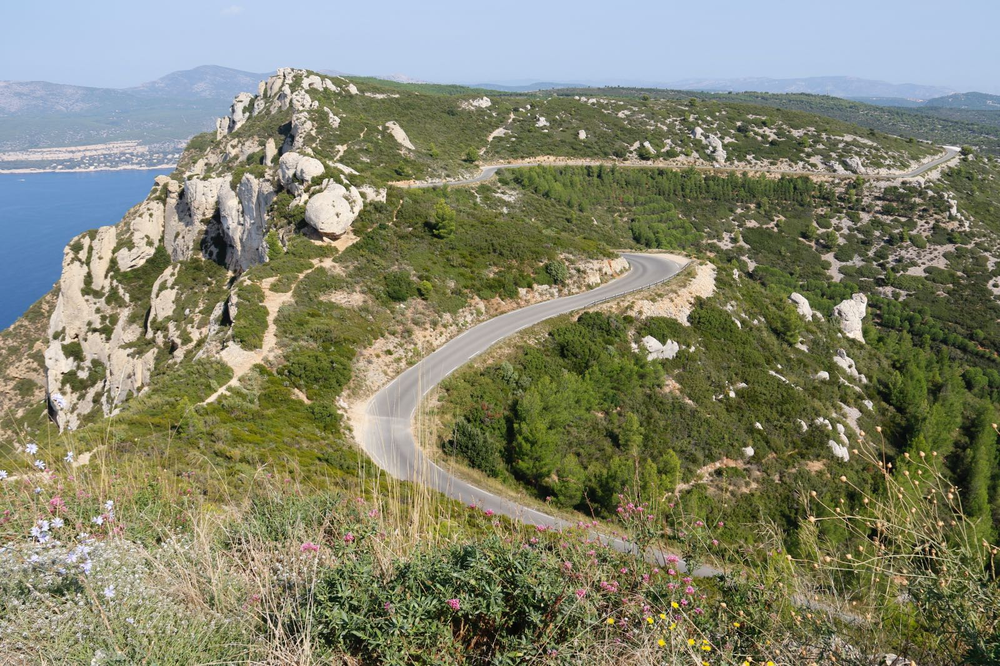

Un week-end sur la route des crêtes sans voiture ?
Libérée du bruit des voitures le dimanche depuis le mois d'avril 2024, sa prolongation a été annoncée.
Lire la suite...Un site dédié aux passionnés de randonnée dans les Bouches-du-Rhône ! Ici, vous trouverez tout ce qu’il faut pour explorer les merveilles naturelles de la région, des calanques spectaculaires aux sentiers boisés de la Provence. Conçu pour tous les niveaux, Rando-13 rassemble des itinéraires variés, des conseils pratiques, et des infos locales pour vous accompagner sur les plus beaux chemins du département.
Que vous soyez en quête de promenades paisibles ou d’aventures plus sportives, Rando-13 est là pour vous inspirer. Vous découvrirez des circuits qui allient panoramas marins, collines, et paysages d’une richesse exceptionnelle. Ce site, c’est aussi un espace d’échange pour rencontrer d’autres randonneurs et partager vos expériences. Rejoignez notre communauté et partez à la découverte des trésors cachés des Bouches-du-Rhône !
Bonne visite et belles randonnées !
Libérée du bruit des voitures le dimanche depuis le mois d'avril 2024, sa prolongation a été annoncée.
Lire la suite...
Vous en avez entendu parler ? mais n'y êtes jamais allé ? voici quelques informations à savoir pour une balade inoubliable
Lire la suite...envie de retrouver un groupe ? le prochain GR est organisé à...
En savoir plus...